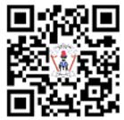

Utangulizi
Kitabu cha Sayansi Darasa la Tano kimetayarishwa kwa kuzingatia muhtasari wa somo la Sayansi Elimu ya Msingi Darasa la III-VI uliotolewa na Wizara ya Elimu Sayansi na Teknolojia mwaka 2023. Baadhi ya maudhui ya kitabu hiki yamechukuliwa kutoka katika vitabu vya Sayansi na Teknolojia Darasa la Tano, na Sita. Kitabu cha Sayansi na Teknolojia Darasa la Tano kilichapishwa mwaka 2018 na Darasa la Sita mwaka 2019 kwa kuzingatia muhtasari wa Somo la Sayansi na Teknolojia wa mwaka 2016.
Kitabu hiki kina sura tano ambazo ni Mfumo wa mmeng’enyo wa chakula, Ukuaji katika mimea na wanyama, Mfumo wa uzazi, Usumaku na Usimbaji katika kompyuta. Maudhui ya kitabu hiki yamewasilishwa kwa njia ya matini, kazi za kufanya, majaribio, mazoezi, michoro na picha mbalimbali ili kukuwezesha kujenga umahiri uliokusudiwa katika kila sura. Kila sura ina kazi za kufanya na mazoezi ya kutosha yatakayokuwezesha kupima uelewa wako kuhusu maudhui husika. Unatakiwa kufanya kazi zote, majaribio, maswali na mazoezi peke yako au kwa kushirikiana na wenzako.
Aidha, unashauriwa kuwashirikisha walimu, wazazi au walezi unapotumia maktaba, mtandao au vyanzo vingine kutafuta taarifa. Jifunze zaidi kupitia maktaba mtandao https://ol.tie.go.tz au ol.tie.go.tz.

Taasisi ya Elimu Tanzania